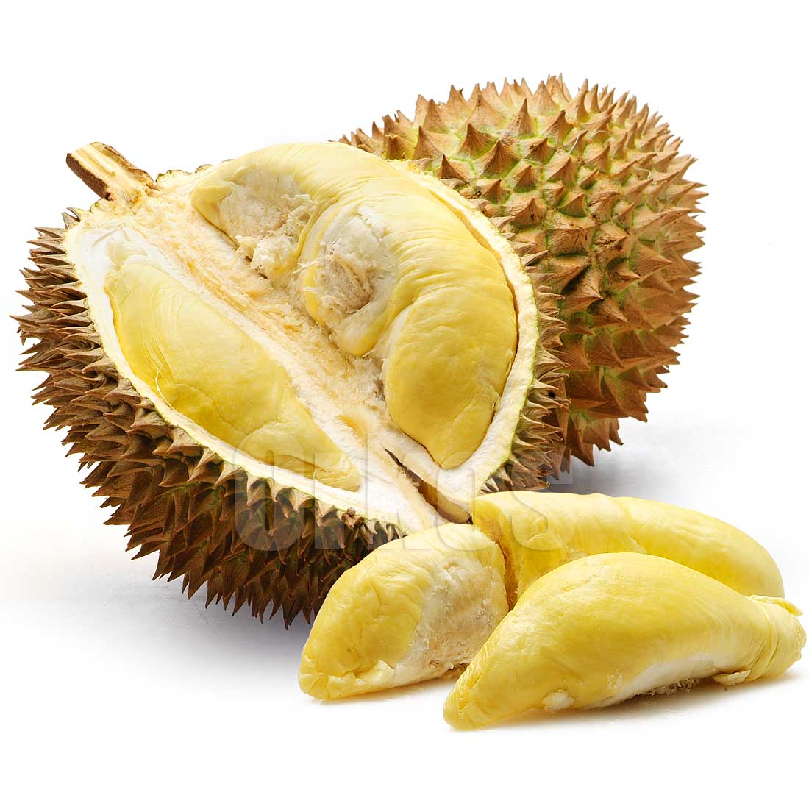

Kosakata dan Ungkapan
1. Tempat Berbelanja
| Pasar | Market |
| Pasaraya | hipermarket |
| Pasar swalayan | Supermarket |
| Toko | shop,store |
| Toko serba ada (toserba ) | Departement store |
2. Kain Traditional
| Batik | Batik |
| Sarung | Sarong |
| Songket | (a kind of) woven sarong |
| Tenun | Woven , Cloth |
| Ulos | Traditional batak cloth |
3. Buah-buahan
Belimbing (starfruit)
Durian (Durian) 
Mangga (Mango)

Semangka (Semangka)

Jambu Biji (Guava)

Rambutan (Rambutan)

Pisang (Banana)

Durian (mangosteen)
manggis (mangosteen)

Kelengkeng (a kind of longan)
Nanas (Pineapple)

4. Sayur-sayuran
Cabai (Chilli)
Terong (eggplant)

Bayam (Spinach)
Lobak (Radish)
Wortel (Carrot)

Selada (Lettuce)
Kacang panjang (Long bean)
Kubis (Cabbage)